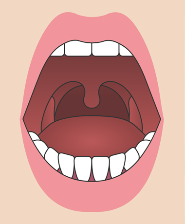
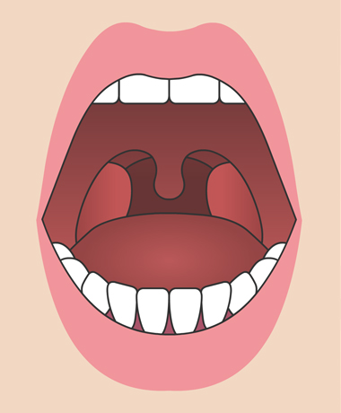
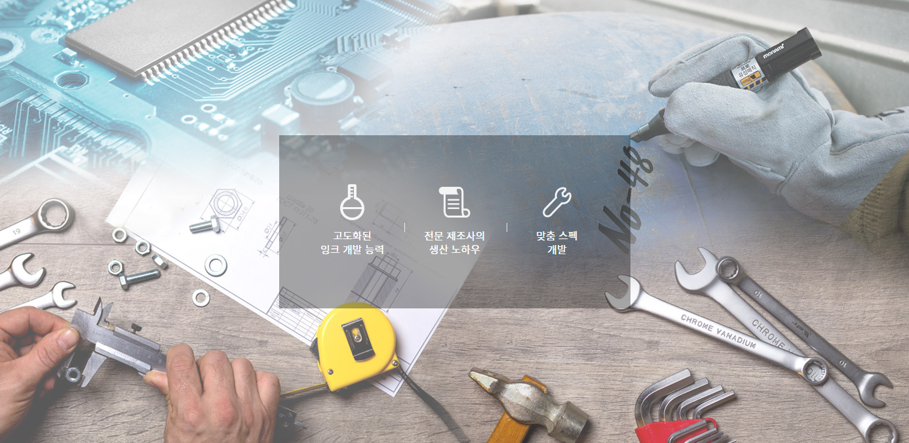
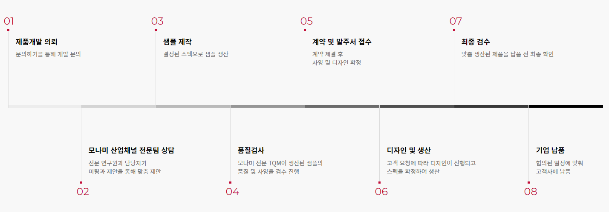
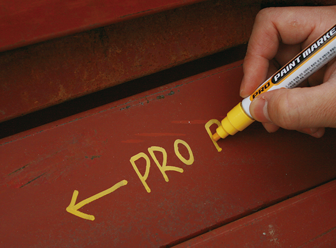

소나무치료법
- HOME
- 한의원 소개
편도
"성인의 경우 주로 감염으로 인한 편도염이 발생됩니다"
|
검사 |
 |  |
|
진단 |
||
|
치료 |
||
|
편도절제술 |
산업용 맞춤 제품개발
맞춤 프로모션 솔루션과 제품을 제공합니다.
- HOME
- 산업용 맞춤 제품개발
PRODUCT CUSTOMIZED
1. 사업 소개
종합 문구를 선도하는 모나미는 가정, 사무실을 넘어 산업현장까지 창의성과 간결함으로 효율성을 향상시키는데 주도적인 역할을 하고 있으며,
특히 산업현장(자동차/섬유/선박 등)에서 필요한 제품을 용도에 맞춰 다양한 옵션으로 고객이 원하는 제품을 맞춤 개발하고 있습니다.

2. 산업용 OEM 제품 개발 프로세스

3. 산업용 OEM 제품
|  | |
| 프로 페인트 마카 | 스틸 마카 CLIP & TWIN |
|
새로운 기술을 적용한 저자극성 알코올 타입 잉크 (Xylene-Free) 속건성으로 작업이 편리 내수성, 내광성이 우수하여 외부환경에 적합 금속, 나무, 플라스틱, 유리 등 다양하고 거친 표면 및 기름진 표면에도 사용 가능 플라스틱 바디와 클릭 적용으로 휴대가 편리 내구성이 우수한 닙을 사용하여 쉽게 마모되지 않고 장시간 사용 가능 |
오일 묻은 금속재질에 사용 가능한 전문 마카 속건성으로 표기의 효율성 높음 물 또는 알칼리 수용액으로 흔적 없이 쉽게 세척됨 자동차, 선박 등 탈지공정이 있는 산업에서 사용 새로운 기술을 적용한 저자극성 알코올 타입 잉크 (Xylene-Free) 클립을 추가하여 휴대성 강화(CLIP) |

|
|
| 프로 유성매직 | 고순도 마카500 |
|
사용자의 편의를 고려한 미끄럼 방지 고무그립으로 장갑을 낀 상태로도 편리하게 사용 금속, 나무, 플라스틱, 유리 등 다양하고 거친 표면에 사용 가능 2009년도 레드닷 디자인 어워드 수상 기름진 표면에서도 사용 가능 |
원자력 발전소, 항공기 부품, 조선소 등 금속부식에 민감한 산업에 적합 황 (S), 할로 ( CI, Br) 등 13개 규제 기준에 적합한 초 고순도 잉크 잉크 Lot에 따른 규제물질 공인 인증 성적서 발급 가능 |